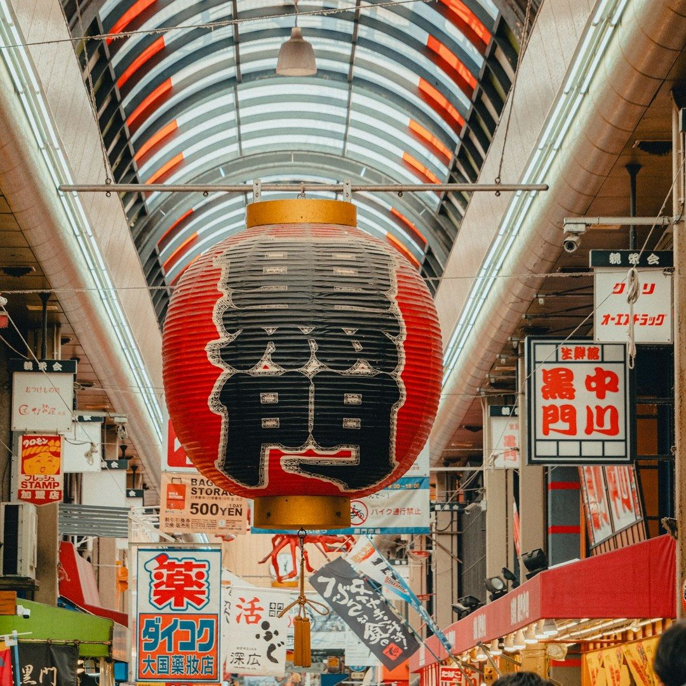
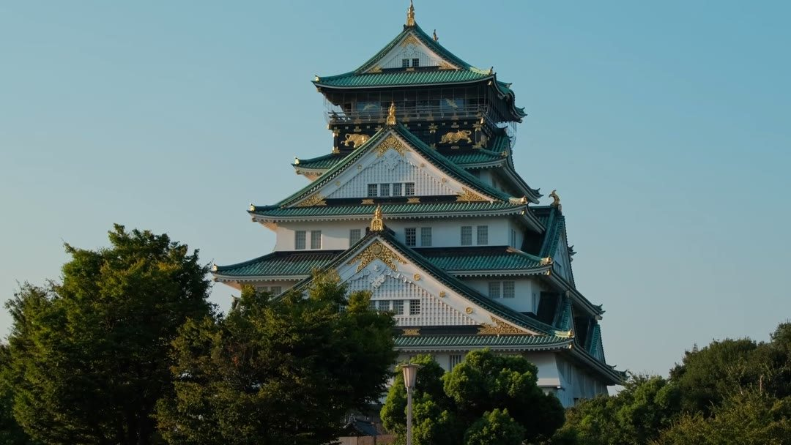
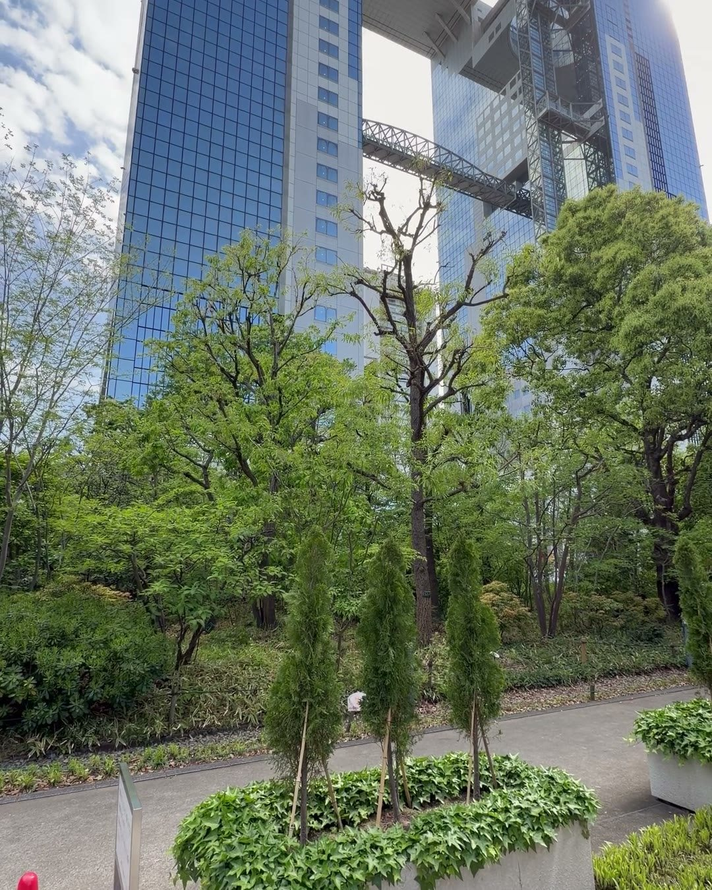
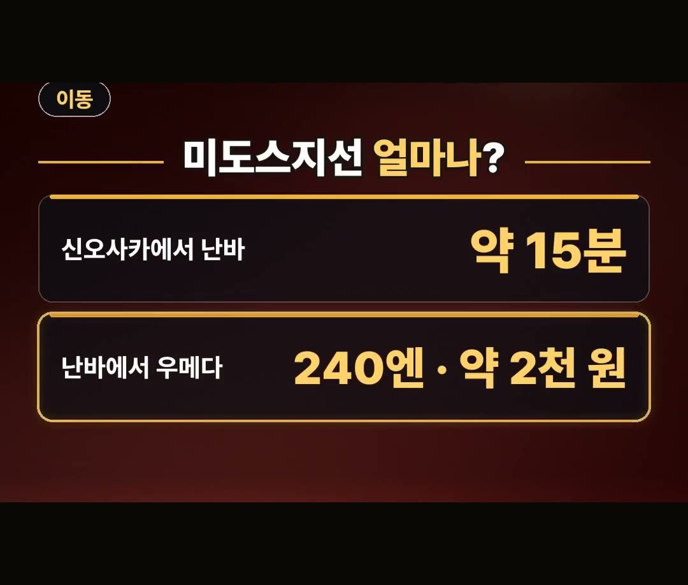
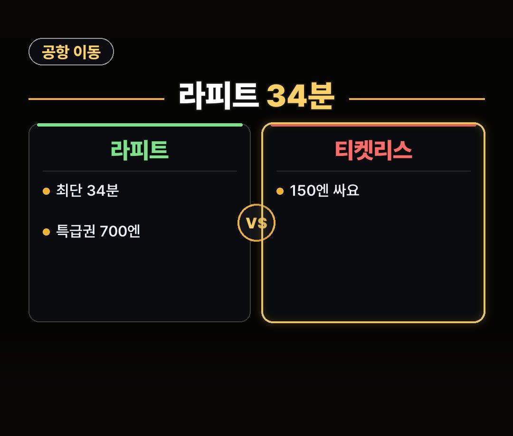
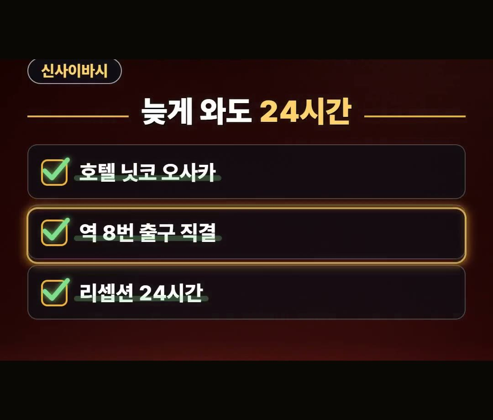
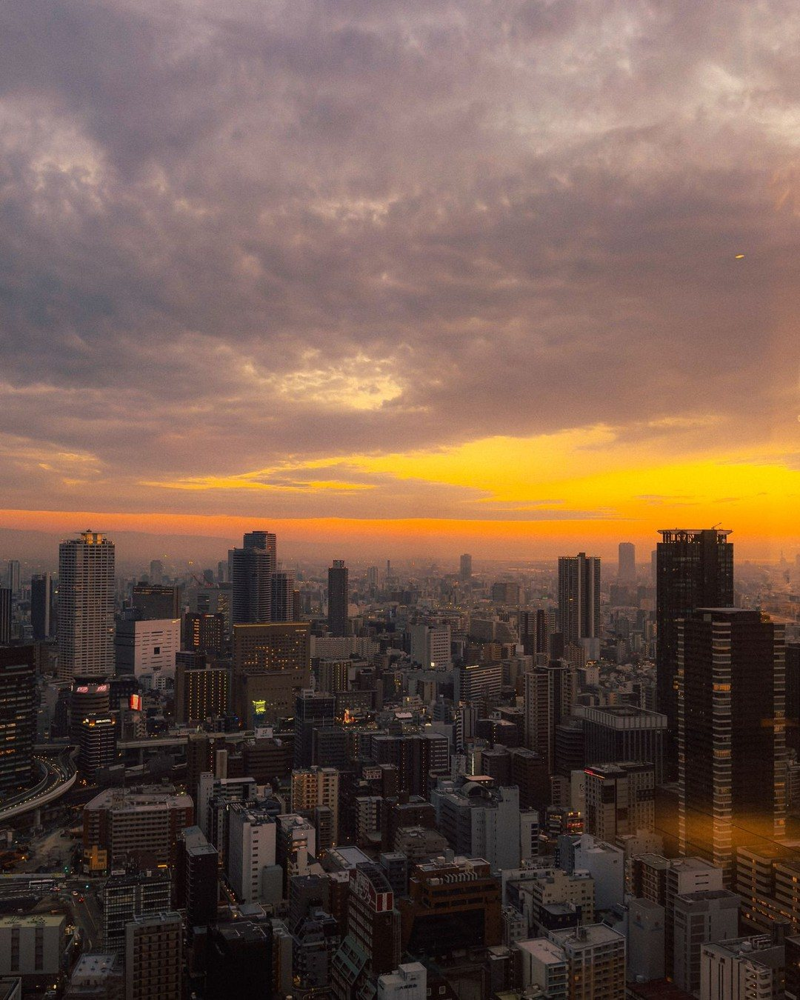

오사카 여행 숙소, 난바·신사이바시·우메다를 고르는 이유
※ 이 글에는 제휴 링크가 포함되어 있으며, 링크를 통해 예약·구매하시면 일정 수수료를 받을 수 있습니다. (가격은 같습니다)
※ 이 포스팅은 쿠팡 파트너스 활동의 일환으로, 이에 따른 일정액의 수수료를 제공받습니다.

호텔 사진과 1박 가격부터 열어 보고, 그 동네가 어느 노선 위에 있는지는 마지막에야 확인하는 분이 많아요.
노선부터 보면 후보가 금방 좁혀집니다.
이 글에서는 오사카 여행 숙소를 난바·신사이바시·우메다 중에서 고르는 이유를 2026년 10월 기준으로 정리했어요.
미도스지선 이동 시간과 요금, 라피트, 24시간 리셉션 호텔, 숙박세까지 차례로 짚어 볼게요.
안녕하세요, 돈 아끼는 연구소의 아낌 소장이에요.
2026년 10월 기준으로 난바·신사이바시·우메다가 미도스지선 한 노선 위에 있다는 것, 그리고 난바에서 우메다까지 240엔(약 2천 원)이라는 것만 먼저 정리해 봤어요.
이 두 가지는 꼭 기억하세요! 😊
오사카 여행 숙소 위치 비교, 기준은 미도스지선

숙소 위치를 비교할 때 먼저 볼 기준은 노선이에요.
난바, 신사이바시, 우메다는 세 곳 모두 미도스지선 위에 있습니다.
한 노선 위에 있으니 오사카 여행 숙소 위치 비교는 이 세 동네를 놓고 시작하면 단순해져요.
이 세 곳이 동선에 유리합니다.
반대로 이 노선을 모르고 숙소를 잡으면 시간을 허비할 수 있다는 점이 핵심이에요.

- 난바
- 신사이바시
- 우메다
미도스지선으로 얼마나 걸리고, 얼마일까요

숫자로 보면 이렇습니다.
신오사카에서 난바까지는 미도스지선으로 약 15분이에요.
난바에서 우메다까지는 240엔, 약 2천 원이고요.
세 동네가 한 노선으로 이어져 있으니, 이동 시간과 요금을 미리 알고 숙소 동네를 고르면 일정을 짜기가 한결 편해요.
- 신오사카 → 난바: 약 15분
- 난바 → 우메다: 240엔 (약 2천 원)
오사카 여행 숙소 위치 추천, 공항에서 오는 길은 난바

난바는 공항에서 라피트를 타면 최단 34분이에요.
라피트를 타려면 특급권 700엔이 따로 들어요.
이 특급권은 난카이 티켓리스로 사면 150엔 싸게 살 수 있습니다.
오사카 여행 숙소 위치 추천을 공항에서 오는 길 기준으로 한다면, 이동 시간이 숫자로 나오는 난바부터 살펴볼 만해요.
- 공항 → 난바(라피트): 최단 34분
- 라피트 특급권: 700엔 (따로 듦)
- 난카이 티켓리스로 사면: 150엔 싸게
신사이바시, 늦게 도착해도 리셉션 24시간

신사이바시에서는 호텔 닛코 오사카를 예로 들 수 있어요.
역 8번 출구에서 바로 이어지는 직결이고, 리셉션은 24시간입니다.
도착이 늦는 일정이라면 이런 조건을 같이 보시는 게 좋아요.
데이터는 이심으로 미리 챙기세요.
- 호텔 닛코 오사카
- 역 8번 출구 직결
- 리셉션 24시간
오사카여행 숙소 잡는법, 예약 전에 같이 볼 것

오사카여행 숙소 잡는법을 정리하면 위치만큼 같이 볼 숫자가 있어요.
고를 때 볼 기준 4가지를 정리했습니다.
- 미도스지선 위의 동네인지
- 공항에서 오는 시간과 요금
- 리셉션이 몇 시까지 열려 있는지
- 숙박세
숙박세는 1인 1박 요금이 5천 엔 이상이면 200엔, 약 1천 7백 원부터 붙습니다.
숙소 요금과 별도로 생각해 두세요.
그리고 클룩 일본·한국 겨울 투어 및 활동 15% 할인은 2월 28일까지이고, 최대 1만 3천 원이에요.
코드는 예약 링크와 함께 확인하시면 됩니다.
정리
- 숙소는 미도스지선 위의 난바·신사이바시·우메다. 신오사카에서 난바까지 약 15분, 난바에서 우메다까지 240엔(약 2천 원)이에요.
- 난바는 공항에서 라피트로 최단 34분이에요. 특급권 700엔이 따로 들고, 난카이 티켓리스로 사면 150엔 싸요.
- 신사이바시의 호텔 닛코 오사카는 역 8번 출구 직결에 리셉션 24시간이고, 숙박세는 1인 1박 요금이 5천 엔 이상이면 200엔부터예요.
예약 링크는 아래에 모아 두었어요.
지금 쓸 수 있는 여행사 할인
- 📶 해외 데이터는 이심으로 미리 · 마이리얼트립 마이심 「일본 50% 1,400원~」 · 2개 이상 추가 할인 (마이심 화면 표시 기준 · 10/5 확인 · 값은 바뀔 수 있음)
- 🎟 클룩 일본·한국 겨울 투어 15% 할인 코드 「TNA2026JPKRWINTER15OFF」 (최대 1만 3천 원 · 2월 28일까지)
- 🎟 클룩 일본 어트랙션 5% 할인 코드 「일본어트랙션5%」 (최소 구매 금액 없음 · 최대 4천 원 · 일부 상품 제외 · 쿠폰 취소 시 재발행 불가 · 예산 소진 시 조기 종료 · 12월 31일까지)
※ 여행사 사정으로 조건이 바뀌거나 일찍 끝날 수 있어요. 예약 전에 여행사 화면에서 한 번 더 확인하세요. (2026-10-05 확인)
OSAKA오사카FREE📘 무료 오사카 가이드 전자책공항·교통 · 돈 아끼는 법 · 맛집 · 근교 · 벌금·주의 · 귀국 날무료로 보기 ›📌 2026년 10월 기준 정보예요. 가격은 환율·시기에 따라 달라질 수 있어요.
영상 화면: Pexels (Dr. Mohammad Hoque, Giuseppe Paoletti, Liuuu _61, Ryoichi Nakano, Stephan Leuzinger)
사진: Pexels (Liuuu _61, Ariyan)